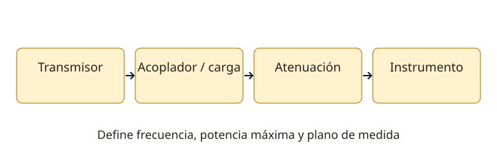

Lección 15 de 16
Mediciones, instrumentos e interferencias
Elige el instrumento y el punto de medida antes de conectar nada, y separa los resultados de sus posibles causas.
Medir tensión, corriente y resistencia
El voltímetro se conecta en paralelo y busca cargar poco el circuito. El amperímetro se intercala en serie y tiene baja resistencia; ponerlo directamente entre bornes de una fuente puede cortocircuitarla. Usa el borne y escala correctos. La resistencia se mide sin alimentación y con la energía almacenada tratada adecuadamente. Una rama paralela cambia el resultado de una resistencia medida dentro de un circuito. En alterna, un instrumento calibrado para sinusoides puede dar errores con ondas distorsionadas.
Potencia, carga y direccionalidad
Para una resistencia conocida y una sinusoide, P = Vrms²/R. Un vatímetro de RF debe corresponder a la frecuencia, impedancia, modo y potencia. Uno direccional puede separar indicaciones de avance y reflexión en su plano de medida; Pneta ≈ Pavance−Preflejada bajo sus condiciones de uso. Una carga ficticia disipa potencia en calor y permite pruebas sin depender de la antena. Su valor, potencia y frecuencia importan.

Osciloscopio y espectro
El osciloscopio muestra tensión frente al tiempo; sirve para forma de onda, rizado y envolvente. El analizador de espectro muestra componentes frente a frecuencia y ayuda a detectar armónicos y productos espurios. Sus entradas tienen límites de potencia, tensión y continua; no se conecta un transmisor directamente salvo que el sistema esté diseñado para ello. Atenuadores, acopladores y cargas deben soportar potencia y frecuencia, y tener calibración conocida.
Analizador de antenas y receptor
Un analizador vectorial de redes puede medir reflexión e impedancia en un plano calibrado; conectores y adaptadores forman parte de la medida. ROE baja no demuestra ganancia ni eficiencia radiada. Para evaluar un receptor se necesitan señales y criterios conocidos: sensibilidad, relación señal/ruido, selectividad e intermodulación son ensayos distintos. Un S-meter indica nivel relativo de recepción; su calibración varía. No permite calcular sin más los vatios del transmisor remoto.
Determinar una interferencia
Distingue una emisión no deseada del transmisor de una sobrecarga o detección no deseada en el aparato afectado. Comprueba si aparece con una carga ficticia, al desconectar accesorios o con la fuente alimentada de otra forma. Cambia una variable a la vez. Armónicos pueden reducirse con filtrado de salida adecuado; corrientes de modo común con disposición y choques apropiados; una entrada sobrecargada puede necesitar filtrado o atenuación. Cada solución depende del mecanismo observado.
Anotar para poder comparar
Registra frecuencia, modo, potencia, cable, carga, configuración del instrumento, calibración y condiciones del ensayo. Incluye incertidumbre o limitaciones cuando importen. En un transistor, un multímetro puede orientar sobre uniones pero no sustituye curvas ni medidas en RF; en una válvula, medir alta tensión requiere medios y competencia específicos. Una cifra con muchos decimales no garantiza exactitud. Conserva las lecturas y distingue claramente lo medido de lo inferido.
Resuelve paso a paso
Proteger la entrada
100 W son 50 dBm. Reducirlos idealmente a 0 dBm (1 mW) exige 50 dB. El montaje real necesita margen y dispositivos que soporten la potencia; no basta con sumar atenuadores pequeños de señal.
Potencia en la carga
Un medidor direccional indica 20 W de avance y 2 W de reflexión: la potencia neta en ese plano es aproximadamente 18 W. Las pérdidas posteriores y la eficiencia de antena siguen siendo otro asunto.
Comprueba lo aprendido: ¿Una lectura S9 permite saber cuánta potencia transmite la otra estación?
No. También influyen propagación, antenas, pérdidas y calibración del receptor. Es una indicación de nivel recibido, no una medida directa de la potencia remota.
Preguntas oficiales de este tema
Selecciona una alternativa y pulsa «Comprobar respuesta». Si fallas, podrás ver la respuesta correcta para seguir aprendiendo. Las preguntas con incidencias documentales se muestran solo para consulta y no se califican.
Continúa tu recorrido
Fuentes de estudio: programas técnicos y banco SUBTEL, apéndices A–E, versión 06/12/2020, y sus solucionarios oficiales. Reglamentación: Decreto 523, versión 21/06/2013; evaluación: Resolución Exenta 2620/2023. Revisión documental: 11/11/2026. Explicaciones, cálculos y esquemas didácticos de RUFCOM. Consultar documentos oficiales.